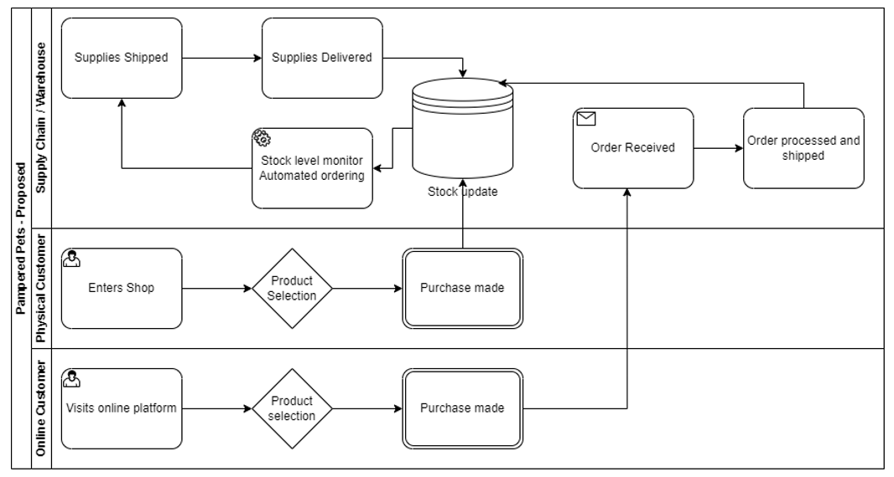
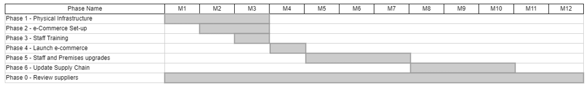
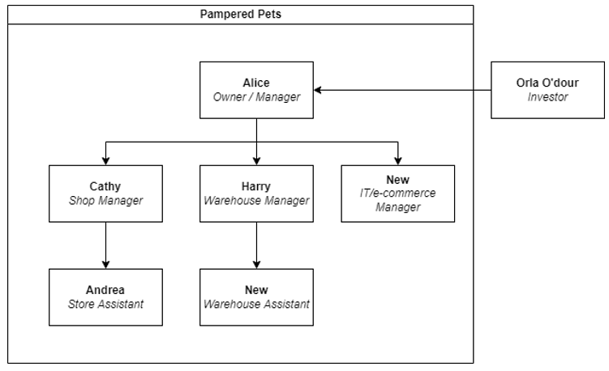

Assessment for Pampered Pets
Team 1: David Abiodun; Nelson Akaffou; Mark Collins; Ilyas Demirtas; Stephanie Irina
1. Background and Scope
This team will assess Pampered Pets' business risks, focusing on current practices and future growth. The evaluation will consider risks associated with online expansion, e-commerce improvements, and potential scenarios for development:
- Do nothing
- Mitigate existing risks without investing in e-commerce
- Digitize business practices and invest in e-commerce
2. Current Business Model
Pampered Pets uses partially digitized processes, such as stock tracking via networked computers, but risks like unauthorized access, system failures, and manual handling errors remain.

Risk Assessment for Existing Processes
Key risks identified include network vulnerabilities, outdated systems, reliance on local suppliers, and lack of a digital presence. These were assessed using the ISO31000 framework.
| Source | Threats | Risks | Impact |
|---|---|---|---|
| Network Vulnerabilities | Unauthorized access, malware attacks, data breaches | Loss of sensitive customer data, operational disruptions | High |
| Old Computer Use | System failures, outdated software vulnerabilities | Data loss, inefficient tracking of inventory | Medium |
| Dependency on Local Suppliers | Supply chain disruptions, supplier failures | Inability to meet customer demand, loss of reputation | High |
| Manual Handling of Orders | Order errors, delayed processing | Customer dissatisfaction, loss of sales | Medium |
| Lack of Digital Presence | Inability to capture online sales, limited market reach | Stagnant growth, reduced competitiveness | High |
| Data Backup and Recovery | Data loss due to hardware failure or cyber incidents | Loss of transaction records, financial disruptions | High |
| Physical Security of the Premises | Theft, vandalism | Loss of inventory, damage to property | Medium |
Mitigations: Implement strong firewalls, antivirus software, and regular software updates. Provide employee training on cybersecurity best practices and ensure regular data backups to a secure cloud service.
3. Proposed Digitalization and E-Commerce Strategy
The benefits of digitizing the business and adopting an e-commerce platform are highlighted in the proposed new model. However, the digital shift increases warehouse workload, requiring further staff and IT support.
Risk Assessment for Digital Process
Mitigation approaches include using comprehensive cybersecurity measures such as firewalls, antivirus software, phased digital transformation, employee engagement strategies, and supplier vetting.
Risk Assessment for Digital Processes
The risks associated with digitization were evaluated using a combination of STRIDE and OCTAVE models.

Risk Assessment for Digital Process
Mitigation approaches include using comprehensive cybersecurity measures such as firewalls, antivirus software, phased digital transformation, employee engagement strategies, and supplier vetting.
Phased Implementation
A phased implementation plan was proposed to minimize disruption during the transition, with gradual investments in order management and infrastructure expansion.
E-commerce phased implementation
New organizational structure
4. Project Outline
A phased implementation of digital transformation is recommended, starting with backend systems like inventory management, followed by customer-facing platforms. Additional staff will be needed to handle increased warehouse operations and oversee digital risk management.
5. Conclusion
We recommend Pampered Pets invest in an e-commerce platform to capture at least 6.6% of the market. Additionally, suppliers should be reviewed to find savings, ensuring quality control to protect the brand’s reputation.